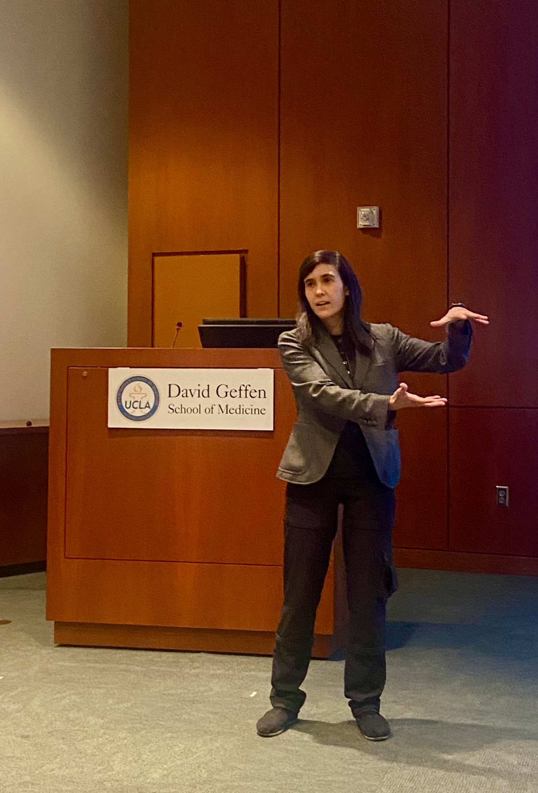

Clinical Neuro · Neurotechnology · Neuroscience
I work on making neuro work.
Serving as Head of Neuroscience Clinical Trials and Partnerships at Radial, the largest brain medicine clinical network in the United States.
My experience has been hands on and direct, which matters a great deal for closing gaps: early clinical work, basic research, device testing and characterization, tooling, documentation, training teams on protocols, diligence in venture capital, journalism, and advising organizations.
My core strength is structural synthesis. I have produced field-level analyses and diligence frameworks. I publish many reference materials that transfer information rather than hype. I am especially interested in capital-accountability coupling: what makes neuro initiatives investable, auditable, and resilient.
My flagship work, Field Potentials, is a systems account of clinical neuro: the seats people hold, the gates an intervention must pass, and the twenty-two mechanisms that decide whether good work reaches patients. It is free.
A Systems Account of Clinical Neuro
Clinical neuro keeps its promises more often when the people in it can see past their own seat. Most of the field’s failures happen at the seams, where a researcher, a regulator, a payer, a clinician, and a builder each hold one piece and no one is paid to watch the joins.
Field Potentials maps those seams. It is written for anyone who works in clinical neuro, drugs and devices alike, or lives with what it produces, and it assumes little beyond curiosity.
Field Potentials supersedes MECHANISMS, my earlier account of medical neurotechnology.
Field Potentials v0.0 is on Zenodo, free to read and download.
Open on Zenodo → Explore the seats and mechanisms online →I earned a PhD in neuroscience from the University of Michigan. My discovery research focused on brain rhythms and neural circuits. Today I work across clinical trials, product, writing, and strategy in neurotechnology.
My work turns hard-won knowledge into tools and resources others can use.

These resources are free to use and share, with no login and no email needed.
These games are free to use and share, with no login and no email needed.